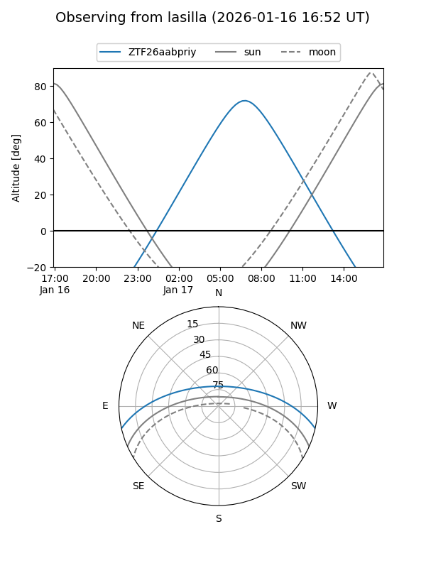
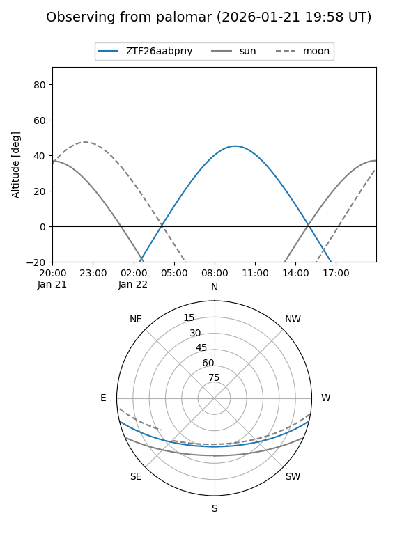
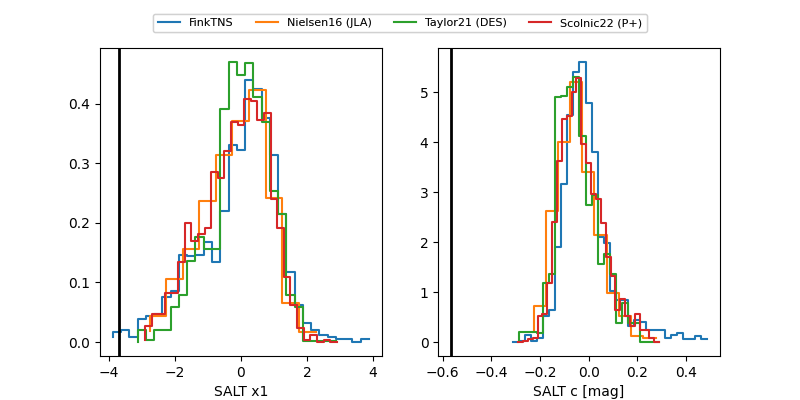

ZTF26aabpriy
Target ZTF26aabpriy at 2026-01-18 08:40
Aliases and brokers:
FINK: link
Lasair: link
ALeRCE: link
alt names
ZTF26aabpriy (ztf,fink_ztf)
Coordinates:
equatorial (ra, dec) = 147.6782,-11.18282
equatorial (HMS+DMS) = 09:50:42.78,-11:10:58.16
galactic (l, b) = (247.9681,+31.80153)
Flags:
Photometry:
last ztfr=19.86
1 ztfr detections
Lightcurve

Visibility


Additional plots
